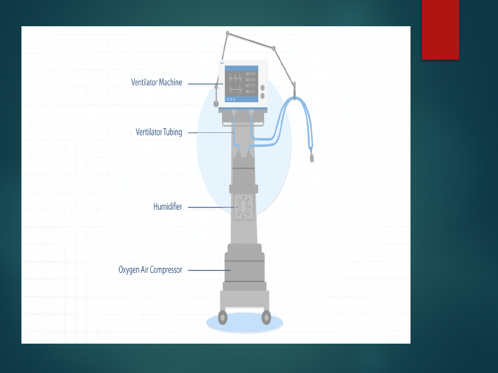
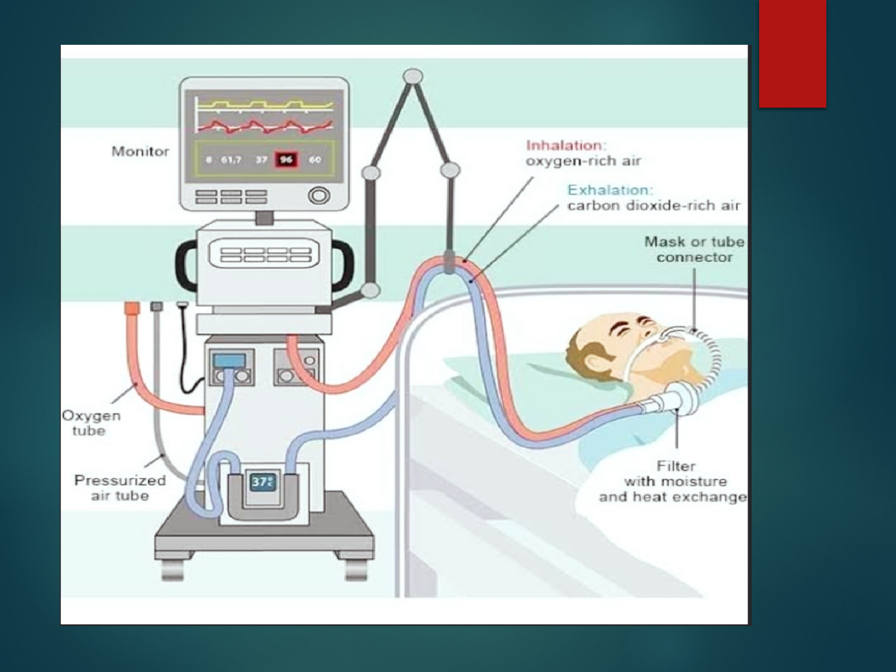
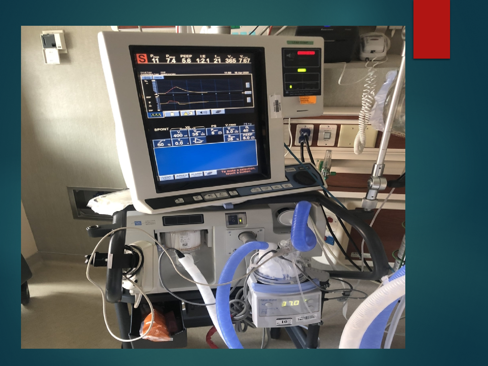

Topic-Mechanical
Ventilation
Speciality-Medical surgical(N)
Super speciality-Cardio vascular and
thoracic(N)
SUMITTED TO-
PROF SONIA BEHERA
HOD ,MSN
LJM,CON
SUMITTED BY-
SASWATIKA PANDA
MSC (N) 2
ND
YEAR
LJM,CON
INTRODUCTION
DEFINITION-
MECHANICAL VENTILATION
It is a process of giving artificial respiration through the
device“MechanicalVentilator”.
Mechanical ventilation is the process by which the friction
of inspired oxygen (FiO2) is at 21% room air or greater
and moved into and out of the lungs.
CONT-
MECHANICAL VENTILATOR
It is a device to inflate the lungs artificially by positive
pressure.
Mechanical ventilator is a machine that generates a controlled
flow of oxygen or gas into a patient's airway.



HISTORY
1908-Galen: The Roman physician Galen may have been
the first to describe mechanical ventilation: "If you take a
dead animal and blow air through its larynx [through a
reed], you will fill its bronchi and watch its lungs attain
the greatest distension.
1928: Early history of mechanical ventilation begins with
various versions of what was eventually called the iron
lung, a form of noninvasive negative pressure ventilator
widely used during the polio epidemics of the 20th
century .
CONT-
1931: John Haven Emerson, a mechanical assister for
anesthesia with the cooperation of the anesthesia
department at Harvard University. Mechanical ventilators
began to be used increasingly in anesthesia and intensive
care
1955: Forrest Bird invented "Bird Universal Medical
Respirator" in the United States which changed the way
mechanical ventilation was performed with the small green
box becoming a familiar piece of medical equipment.

GOALS OF MECHANICAL
VENTILATION -
Decrease work of breathing
Increase alveolar ventilation
Maintain ABG values within normal range
Improve distribution of inspired gases.

PURPOSE OF VENTILATION
Provide adequate oxygen (O2) to meet metabolic
requirement.
Remove waste product of metabolism: Carbon dioxide
(CO₂).

INDICATIONS
Cardiac diseases :-
Cardiogenic Shock
Central Nervous System diseases :-
Cerebral trauma
Cerebro vascular accident
Spinal cord injury
Neuro Muscular diseases :-
Guillain-Barre syndrome
Multiple sclerosis
Poliomyelitis
CONT-
Musculoskeletal diseases :-
Kyphoscoliosis
Myasthenia gravis
Others :-
Trauma like rib fractures, head injury, facial trauma.
Surgery like cardiac surgery, pulmonary and gastro intestinal
surgery.
CONT-
RESPIRATORY ASSESSMENT
Respiratory rate > 35 bpm
Negative inspiratory force < -25 cm H2O
Vital capacity < 10 ml/kg
Minute ventilation < 3 lpm or > 20 lpm
GAS EXCHANGE
PaO2 < 60 mm Hg with Fio2 > 50%
PaO2 > 50 mm Hg (acute) and pH < 7.25

Settings of Mechanical Ventilation
Respiratory rate: The number of breath delivered each minute. Usually 12-14/
minute may be increased or decreased as indicated by arterial CO2 levels.
Tidal volume: The amount of gas set to be delivered with each breath. It is 6-12
mL/ kg body weight .
Oxygen concentration FiO2: The percentage of oxygen delivered to the patient.
21-100%.
Positive end expiratory pressure (PEEP): Pressure exerted to keep alveoli open
at the end exhalation. 3-5 cm H2O is considered "physiologic." Higher levels
are common in critically ill patients.
Inspiration/expiration ratio: The ratio of time between inspiration and
exhalation for each breath. Maintain an I:E of 1:2 or greater (1:3, 1:4, etc.)
Sensitivity: How easy it is for the patient to initiate or trigger a spontaneous
breath. -1 to -2 cm H2OPeak inspiratory pressure: Reflects airway resistance
and/or lung compliance. Set to allow the delivery of an adequate tidal volume.
PARAMETERS -
Respiratory Rate (f) :-Normally 10-20b/m
TidalVolume(VT):-5-15ml/kg
Oxygen Concentration (FIO2):-b/w 21-90%
I:ERatio:-1:2
Flow Rate:-40-100L/min
Sensitivity/Trigger:-0.5-1.5cmH2O
Pressure Limit:-10-25cm H2O
PEEP :- Usually, 5-10 cmH2O

Modes of Mechanical Ventilators
How the machine will ventilate the patient in relation to
the patient’s own respiratory efforts. The manner or
method of support provided by the ventilator.
Basically there are two breath delivery techniques used
Pressure Control mode
Volume control modes.
CONT-
1.ASSIST CONTROL MODE (AC)
Most commonly
As a resting mode, in which ventilator takes over the work
of breathing for the client.
Machine initiated and/patient-initiated breaths.
A preset tidal volume and respiratory rate are delivered.
CONT-
2.INTERMITTENT MANDATORY VENTILATOR (IMV)
Ventilator delivers a preset number of mechanical breaths.
Allows the client to breath spontaneously in between with
no assistance from the ventilator and at varying tidal
volume.

CONT-
3.SYNCHRONIZED INTERMITTENT MANDATORY
VENTILATOR (SIMV)
Deliverspresetbreathsthataresynchronizedwiththepatient’s
spontaneous breaths.
Preferred mode of weaning.

CONT-
4.INVERSE RATIO VENTILATION (IRV)
Normal inspiratory : expiratory ratio is reversed to 2:1 or
greater (the maximum is 4:1).
Longer inspiratory time increases the amount of air in the
lungs at the end of expiration.
Improves oxygenation by re-expanding collapsed alveoli.

CONT-
5.PRESSURE SUPPORT VENTILATION (PSV)
Presetpressureaugmentsthepatient’sspontaneousinspirationeffort
and decreases the work of breathing.
Patient completely controls the respiratory rate and tidal volume.

CONT-
6.CONTINUOUS POSITIVE AIRWAY PRESSURE (CPAP)
Keeps the alveoli open during inspiration and prevents alveolar
collapse during expiration.
Used in the spontaneous breathing patient.
Used as a method for weaning patients from mechanical ventilation.
Improves gas exchange and improves oxygenation.
Normal range for CPAP is 5-15 cm of H2O.
TYPES
Negative-Pressure Ventilators
Positive-Pressure Ventilators
CONT-
NEGATIVE-PRESSURE VENTILATORS (NPV)
Negative pressure applied to chest wall increases the
volume of the thoracic cage.
Mimics spontaneous ventilation.
Negative intrathoracic pressure gradient causes air to enter
lungs.
No need for artificial airway.
Used mainly for chron Nic care of patients with
neuromuscular disorders.
Examples : Iron lung, pulmo-wrap chest cuirass.
CONT-
POSITIVE-PRESSURE VENTILATORS (PPV)
Intrathoracic pressure remains positive throughout
respiration.
Force oxygen into the patient lungs through an
endotracheal or tracheotomy tube to initiate respiration.
Gas is distributed to non-dependent, less-perfused lung
regions
CLASSIFICATIONS OF PPV
Pressure-cycled ventilators :-
Ventilator pushes air until a preset pressure is reached. It is
used for short periods such as in the post anesthesia care unit
and for respiratory therapy.
Volume- cycled ventilators :-
Ventilator pushes air into the lungs until preset volume is
delivered.
Time-cycled ventilators:-
Ventilator pushes air into lungs until a preset time has elapsed.
It is used primarily in pediatric and neonatal population.

COMPLICATIONS OF PPV
Pneumothorax
Barotrauma
Alveolar hypoventilation
Alveolar hyperventilation
Ventilator-assisted pneumonia
Sodium and water imbalance
Stress ulcer
GI bleeding
Increased ICP

NURSING RESPONSIBILITY
Monitoring the saturation level every 4 hours once
Monitor ABG values based on the setting ventilator modes
Checking intubation tube patency
Performing suctioning every 4 hours once
Changing the position every 2 hours once Monitoring signs of any
infection or pneumonia
Auscultation of lung sounds in order to rule
out the lung secretions
Monitoring the complications of ventilator
Monitoring the patient's sedation level and score
Administering muscle relaxant and paralytic agent
Monitoring the tube cuff pressure

RESEARCH RELATED STUDY-
Abstract
Introduction: Mechanical ventilation (MV) is a lifesaving procedure
for critically ill patients. Diaphragm activation and stimulation may
counteract side effects, such as ventilator-induced diaphragm
dysfunction (VIDD). The effects of stimulation on diaphragm
atrophy and patient outcomes are reported in this systematic review.
Evidence acquisition: Studies investigating diaphragmatic
stimulation versus standard of care in critically ill patients and
evaluating clinical outcomes were extracted from a Medline
database last on January 23, 2023, after registration in Prospero
(CRD42021259353). Selected studies included the investigation of
diaphragmatic stimulation versus standard of care in critically ill
patients, an evaluation of the clinical outcomes.

CONT-
These included muscle atrophy, VIDD, weaning failure, mortality,
quality of life, ventilation time, diaphragmatic function, length of
stay in the Intensive Care Unit (ICU), and length of hospital stay.
All articles were independently evaluated by two reviewers
according to their abstract and title and, secondly, a full texts
evaluation by two independent reviewers was performed. To resolve
diverging evaluations, a third reviewer was consulted to reach a
final decision. Data were extracted by the reviewers following the
Oxford 2011 levels of evidence guidelines and summarized
accordingly.
Brochard L, et al. Am J Respir Crit Care Med.
1994. PMID: 7921460 Clinical Trial.
SUMMARY
CONCLUSION

REFERENCES-
GAUTTAM VIJYA KUMAR, PROCEDURE MANUUAL OF MEDICAL SURGICAL
NURSING, FIRST EDITION, PAGE NO 119-134, KUMAR PUBLISHING HOUSE.
KOUR SUKHPAL, CLINICAL NEUROSCIENCE AND CRITICAL CARE
NURSING, FIRST EDITION, PAGE NO 114-122, JAYPEEBROTHERS MEDICAL
PUBLISHER.
PREMA TP AND KF GRAICY, ESSENTIAL OF NEUROLOGICAL AND
NEUROSURGICAL NURSING, SECOND EDITION, PAGE NO 715-730, JAYPEE
BROTHERS MEDICAL PUBLISHERS.
BECK R.ERIC, L.SOWHAMI ROBERT, HANNAG.MICHAEEL,HOLDRIGHT
R,DIANA,TUTORIALS IN DIFFERENTIAL DIAGNOSIS, FOURTH
EDITION,PAGE NO 455-457,ELSEVIER PUBLICATION.
WILKINS AND WILLIAM LIPPINCOTT, MANNUAL OF NURSING PRACTICE,
EIGHT EDITION, PAGE NO 1122-1127, JAYPEEBROTHERS MEDICAL
PUBLISHER.